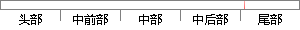

read(mBuffer, 0, BUFFER_SIZE)
片段位置图

相似结果|
相似片段 1：：：CServerSocket0：mBuffer(NULL)mBuffer=newchar[BUFFER_SIZE]；CServerSocket：：-CServerSocket0delete[】mBuffer
相似片段 2：);MBuffer[0] = READ;MBuffer[1] = block;MInfo.nBytesToSend = 2;SetTmo(3);if(status != MI_OK){55if
相似片段 3：对 buffer缓冲区进行读写。同时会将参数 read、buffer、以及 buffer 的字节数目 buffer_size传入 rw_buffer函数里面。函数 rw_buffer完成具体的对缓冲区的读写
相似片段 4：参考文献2005.memset（buff， 0， BUFFER_SIZE）；read（fd， buff， BUFFER_SIZE）；采用底层文件操作函数 open（）打开串口，若返回文件描述符 fd
相似片段 5：)；assetsMessageServiee．shangChuan(this．upload，dstFile，BUFFER_SIZE)；List
相似片段 6：摄像头设置完成后线程就会不断循环采集图像到缓冲区，下面给出循环体中采集图像的相关代码：char buffer[BUFFER_SIZE]; //定义一个局部缓冲区int size = read
|
※ 片段修改建议 ※
近似词参考：